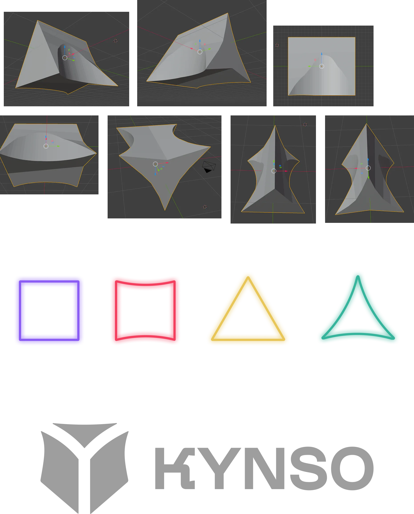
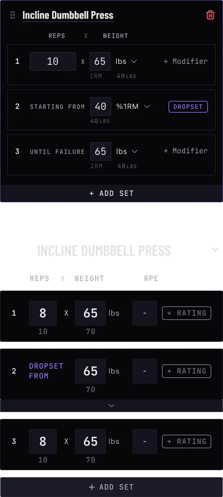
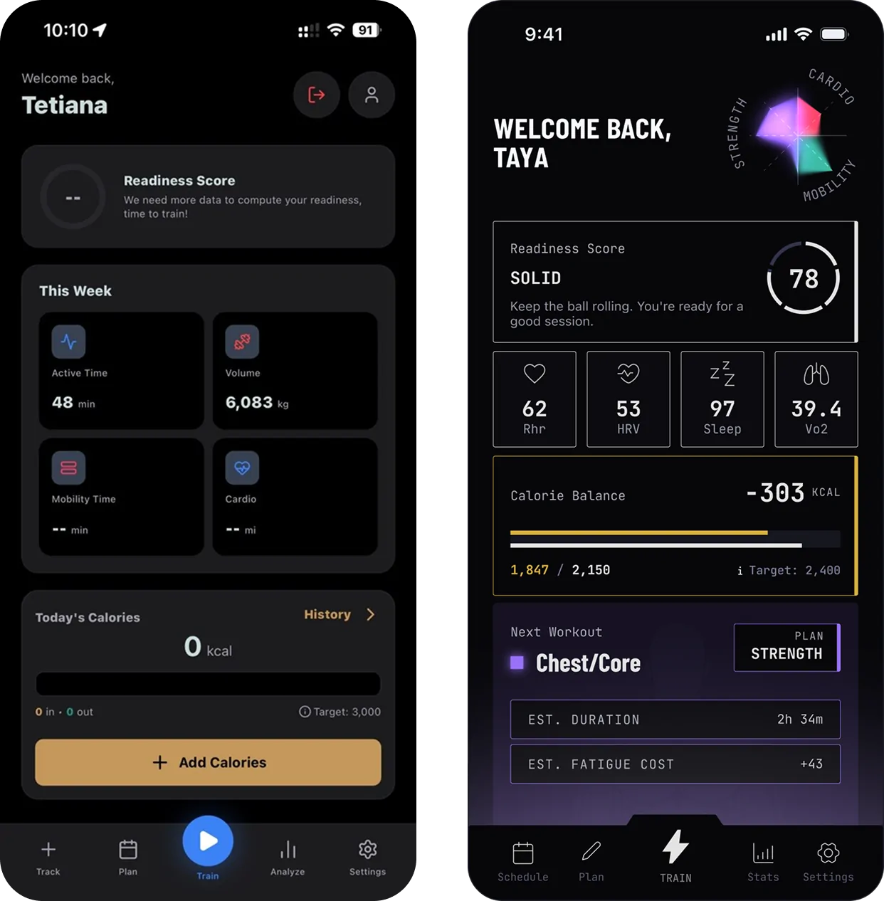
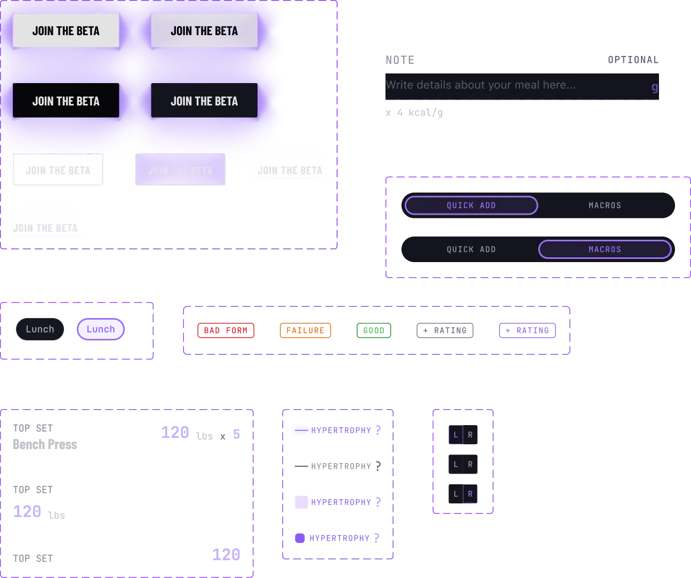
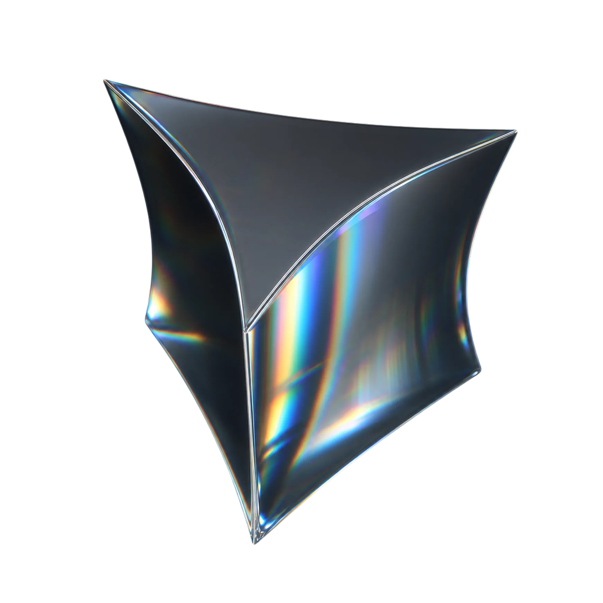
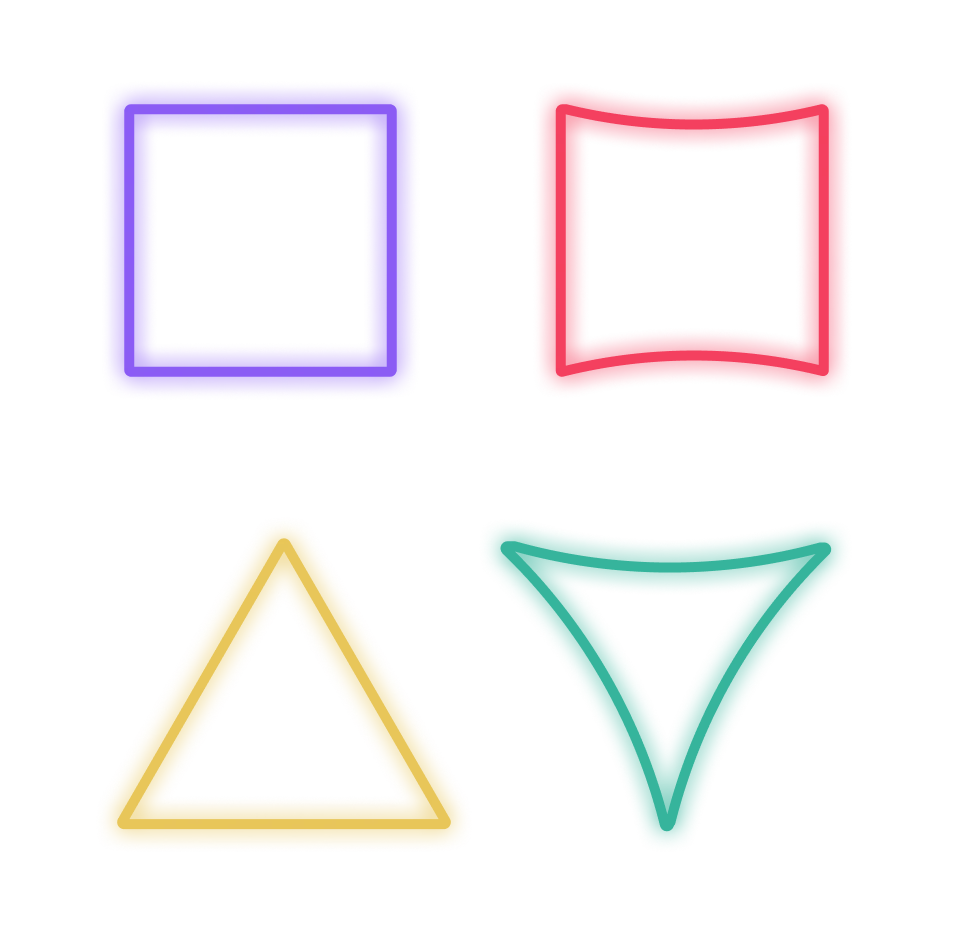
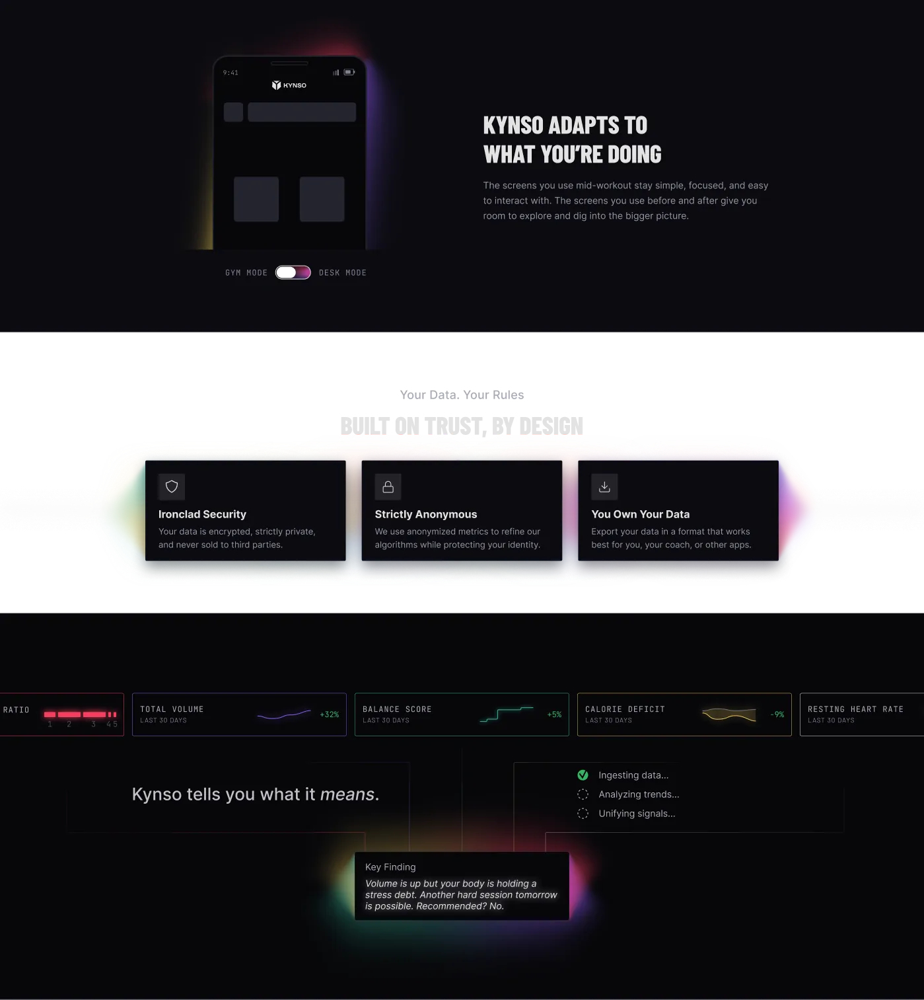
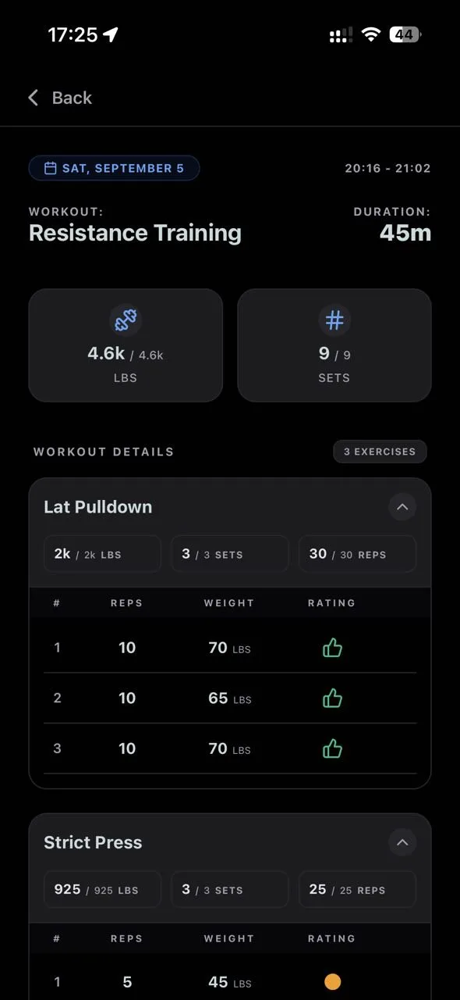

Case study — Kynso
The secret to a 6-domain fitness engine was stripping half the UI off the screen.
Dense trackers collapse during physical exertion. By splitting calm planning from high-intensity training, a 2-person team built an adaptive iOS beta from zero.
Venture
Kynso is an early-stage startup connecting strength, cardio, mobility and nutrition into a single ecosystem.
Athletes were juggling three different trackers, a notes app, and ChatGPT just to see their progress. Kynso was founded to solve that fragmentation. As co-founder, I led product design, brand identity, and marketing, working alongside one engineer to take the concept from zero into internal testing ahead of our upcoming beta.
The problem
The human body is an interdependent system. Fitness apps track everything in silos.
If you lift in a deficit and ate poorly, a typical fitness app still declares you ready to train because it only sees the last workout. Every user we interviewed had hacked together their own fix—logging lifts, runs, and meals across separate tools and pasting them into ChatGPT. The data existed everywhere, but nothing analyzed the trade-offs between them.
- Signal Every interviewed athlete used two to three apps plus a notepad and AI to manually spot training patterns.
- Constraint One designer and one engineer building a multi-domain engine and sync pipeline before public beta.
- Unknown Whether users burned by bad tracker algorithms would trust a new, multi-factor readiness score.
How it got built
Hover a track
-
- Product design

“I built myself a GPT thread... I dump everything in there”



Kynso adapts to what you’re doing
Apple Health syncYou’re on the list
Cohort 01 · hybrid athletes

Squat volume dropped 14% after yesterday’s 10k run.
Suggested: drop 1 working set.
“Great job! Let’s get ready for your next set of deadlifts.”
315 lb × 5
1:30

Biological sex
Most fitness algorithms default to a static 24-hour male baseline. Kynso calibrates every calculation—from metabolic burn and lifting volume tolerance to weekly load shifts—against your actual physiology. Without this, the math is guessing.
Beta applicant qualification
- Discipline mix ≥ 2 fitness types Strength exercises + distance running
- Active stack Currently juggling 2+ apps Strava + Strong / Hevy
- Friction point Subscription fatigue, or context lost between disciplines
Screening out low-signal testers, to curate an intentional cohort of hybrid athletes.

The impact
Advanced from napkin concept to internal testing, delivering a fully integrated multi-domain beta build.
- 6
- Integrated health inputs
- 2
- Adaptive UI session modes
- 3x
- Faster workout logging speed
The biggest breakthrough was learning what not to show. Splitting the interface between calm planning and high-intensity workout modes turned a cluttered tracking utility into a focused training tool. By making the readiness score transparent and cycle-aware, we replaced black-box guesswork with clear, actionable coaching.